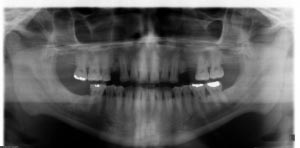

Procedure:
- When the patient’s chin is tipped too high the occlusal plane will be displayed as flat or with a reverse curve.
- The apices of the maxillary anterior teeth may be cut off but the mandibular anterior teeth are displayed better than in the normal projection.
- The hard palate is projected downward to approximate or superimpose onto the apices of the maxillary teeth.
- The condyles may approach or are projected off the lateral edges of the image.
- Please refer to the image below for an example of a panoramic radiograph of a patient positioned with their chin too high during image acquisition.

|